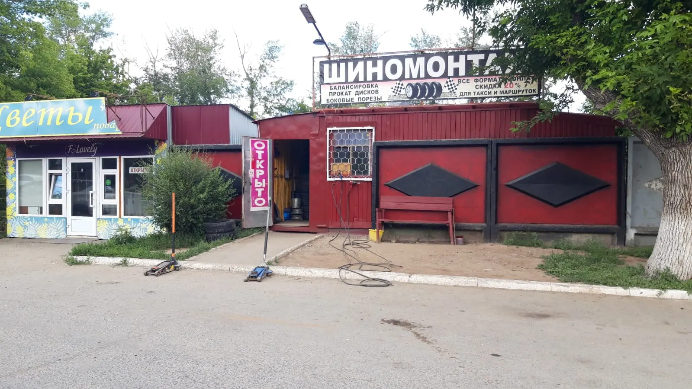
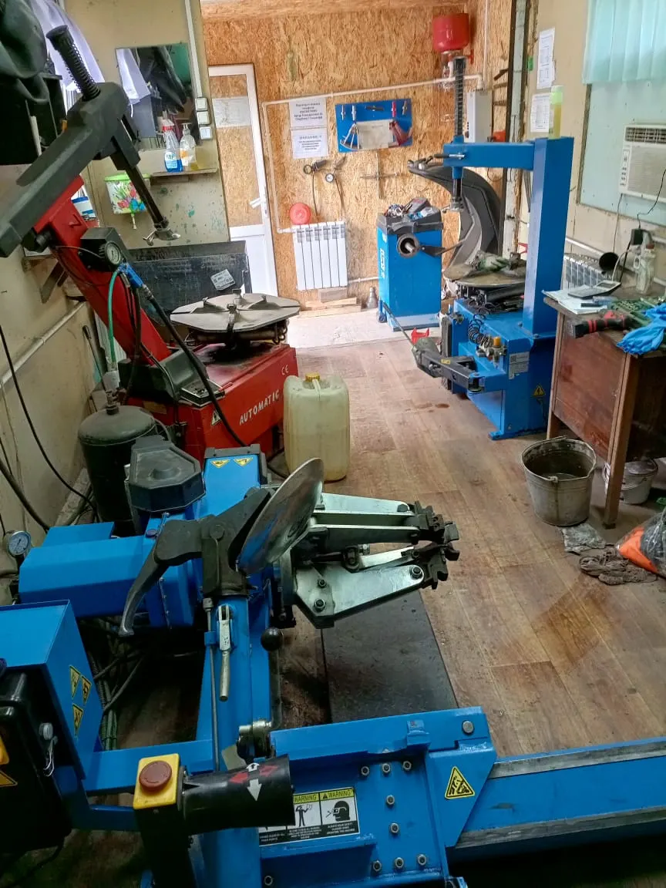
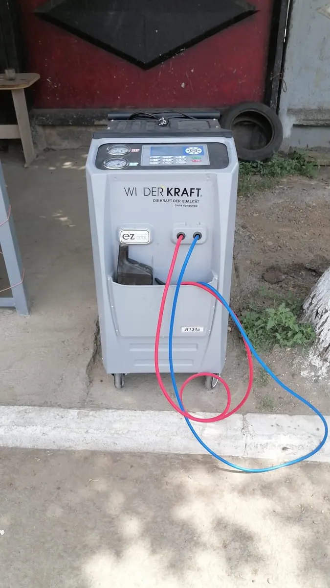
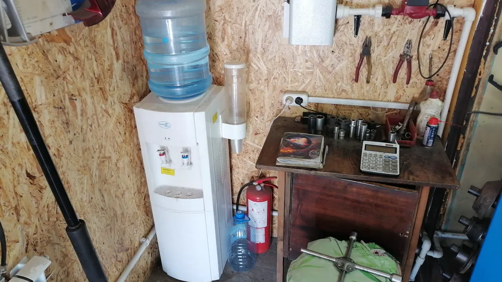

Шиномонтаж · Оренбург
Круглосуточный шиномонтаж в Оренбурге: приезжайте даже ночью
Проспект Братьев Коростелёвых, 28/4. Переобувка, ремонт проколов, прокатка дисков, кондиционеры – выберите услугу и время прямо здесь.
- Круглосуточно, без выходных
- Легковые, грузовые и мотоциклы
- Хранение шин

Услуги и цены
Точную стоимость назовём до приезда – по телефону или в WhatsApp.
Шиномонтаж
- Переобуть все колёсалегковой автомобиль900–1300 ₽
- Балансировкауточнить
- Ремонт прокола, вулканизацияуточнить
- Грузовой шиномонтажуточнить
- Мотошиномонтажуточнить
- Хранение шинуточнить
- Утилизация шинуточнить
Диски и кондиционер
- Прокатка дисковуточнить
- Алмазная проточка дисковуточнить
- Покраска дисковуточнить
- Заправка автокондиционерауточнить
Как записаться
- 01
Выберите услугу, день и время
В форме наверху страницы.
- 02
Отправьте запись в WhatsApp
Текст соберётся сам, останется нажать «Отправить».
- 03
Приезжайте на Братьев Коростелёвых, 28/4
К выбранному времени. Ночью можно и без записи.



Почему к нам едут
Открыты днём и ночью
Спустило колесо к ночи – приезжайте, мы работаем.
Найдём причину
Разберёмся, что с колесом, и подскажем, как решить.
Кофе, пока ждёте
Пока работаем с колёсами, угостим чаем или кофе.
Не только легковые
Грузовые, мотоциклы, прокатка и покраска дисков.
Отзывы с Яндекс.Карт
«Сегодня заехала к ребятам в сервис. Обслуживание на пять с плюсом. Оборудование всё новое. Сделали быстро и качественно. Ребята вежливые, угостили кофем. Теперь только к ним! Рекомендую!!!»
Айгуль Айгуль · 4 января
«Имею две машины, приезжаю всегда к данным ребятам. Отзывчивые, веселые и знающие свое дело. Сделают, подскажут, порекомендуют. Всем советую)»
Радик Назаров · 17 августа 2025
«Замечательный коллектив, быстро и оперативно нашёл причину и подсказал как её решить»
Азамат Карагулов · 25 марта
Отзывы с карточки на Яндекс.Картах, без правок.
Частые вопросы
Можно приехать ночью без записи?
Да, работаем круглосуточно. Ночью просто приезжайте или позвоните.
Сколько стоит переобувка?
Переобуть все колёса – от 900 до 1300 ₽, зависит от колёс. Точную цену назовём до приезда.
Как оплатить?
Наличными или банковским переводом.
Можно оставить шины на хранение?
Да, хранение шин есть. Стоимость уточните по телефону.
Запишитесь или приезжайте
- Адрес
- проспект Братьев Коростелёвых, 28/4, Оренбург
- Часы
- Круглосуточно
- Телефон
- +7 (987) 847-98-84